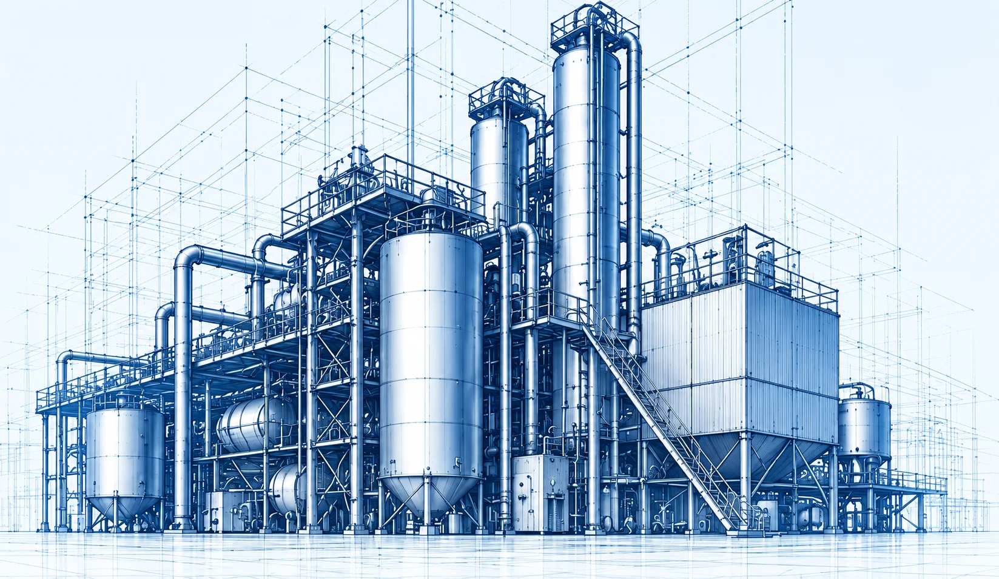
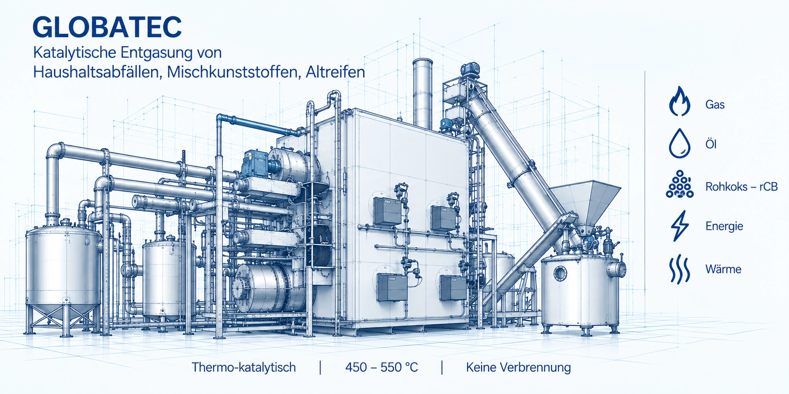
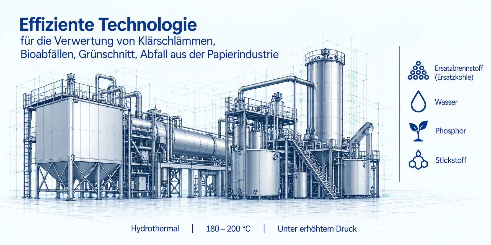
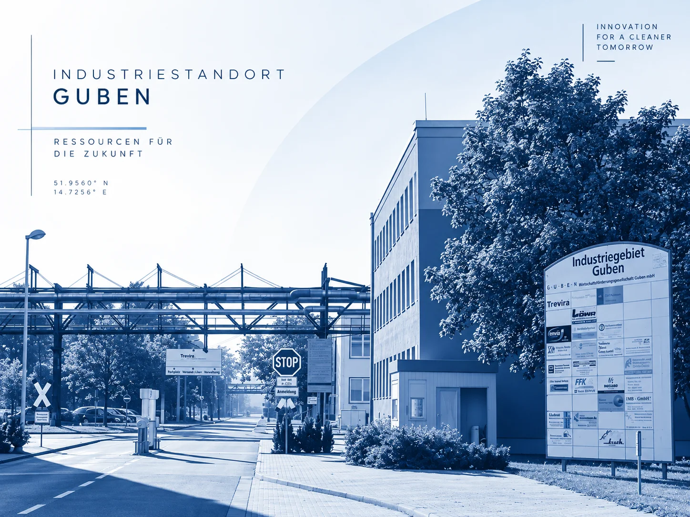

Abfall & Kreislaufwirtschaft
Von Sortierung und Recycling bis zur stofflichen und energetischen Verwertung.
Technologien und ganzheitliche Lösungen für Abfall, Wasser, Abwasser und Energie.
Von der Entwicklung und Planung bis zur Umsetzung und zum Betrieb.

Von Sortierung und Recycling bis zur stofflichen und energetischen Verwertung.
Planung, Modernisierung und Erweiterung kommunaler und industrieller Infrastruktur.
Energie- und Versorgungskonzepte, Wärme- und Stromlösungen sowie Netzinfrastruktur.
Effiziente Verfahren
Zukunftssichere Anlagen
Für unterschiedliche Ausgangsstoffe stehen unterschiedliche Prozesswege zur Verfügung. Entscheidend ist die Passung zum konkreten Stoffstrom und Projekt.
Mehr zu unseren TechnologienKatalytische Entgasung von Haushaltsabfällen, Mischkunststoffen und Altreifen.

Verwertung von Klärschlämmen, Bioabfällen, Grünschnitt und Abfällen aus der Papierindustrie.

Komplexe Infrastrukturvorhaben gelingen dann, wenn Technologie, Genehmigung, Finanzierung und Umsetzung von Anfang an zusammen gedacht werden.

In unserem Innovations- und Forschungszentrum in Guben entwickeln und erproben wir gemeinsam mit führenden deutschen technischen Universitäten und Forschungseinrichtungen zukunftsweisende Lösungen.
Sprechen Sie mit uns über Ausgangsstoffe, Standort, Kapazität und Zielsetzung.